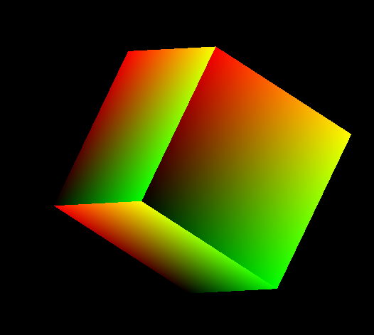
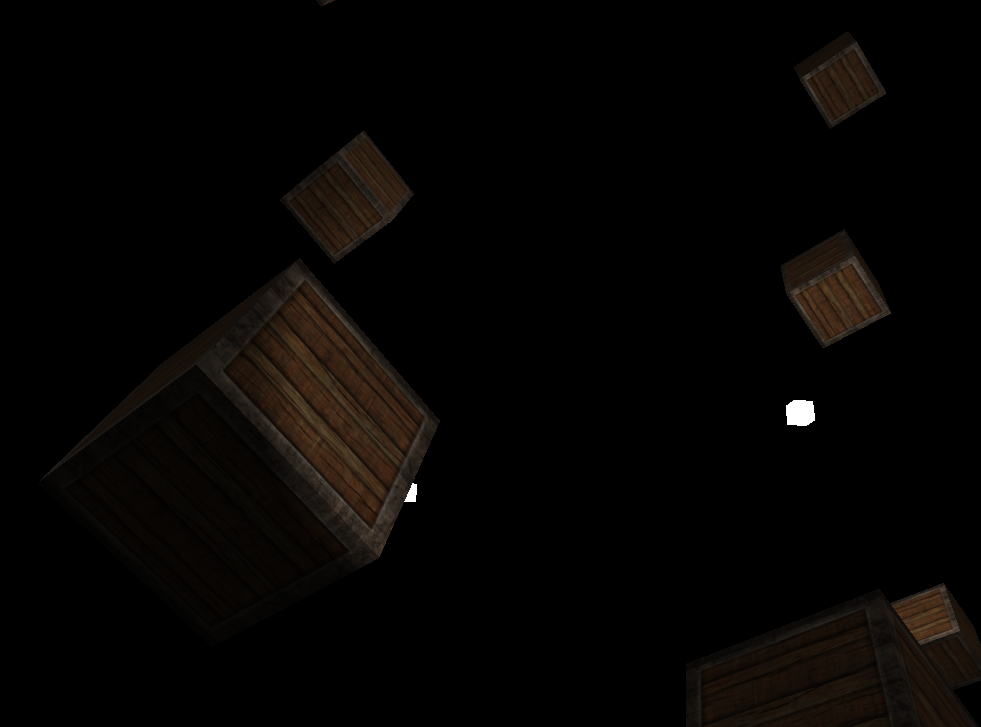
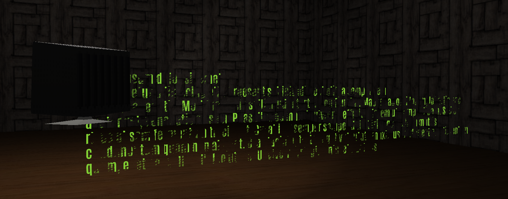
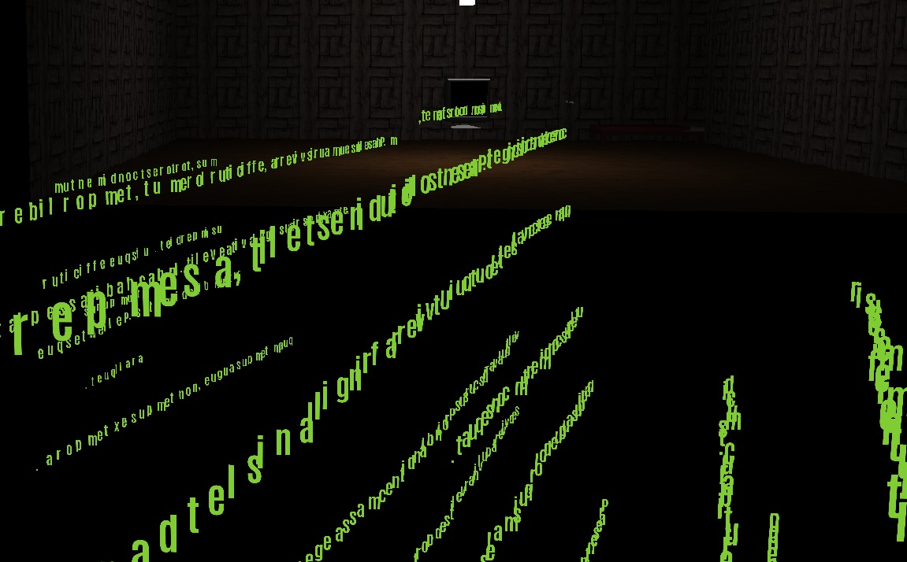
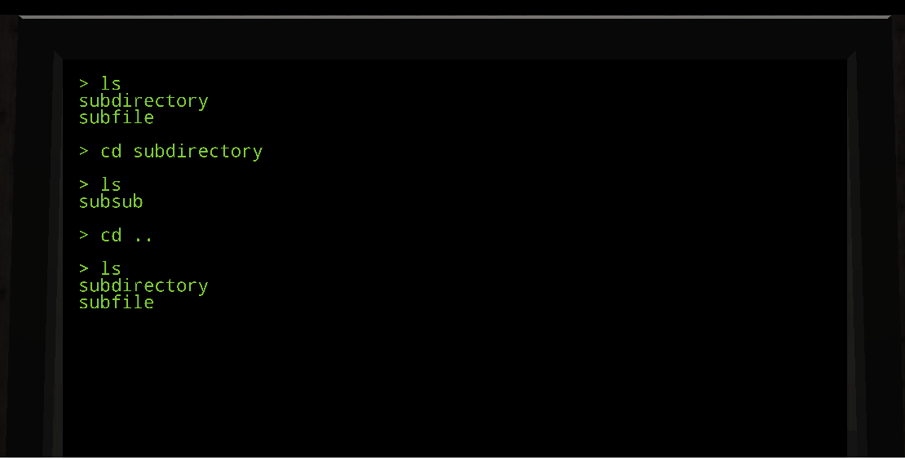

Game Engine
Game Engine
Ever since I was a kid, I've been into game development. I started by playing around with basic engines like GameMaker, RPG Maker, and XNA Game Studio (now known as Monogame).
As I grew older, I also tried some 3D-oriented engines like Unity and Unreal Engine.
in 2023 I started getting curious about the inner workings of a game engine, and figured I should try making my own from scratch.
After some research online, I settled on C++ and OpenGL since there was a wealth of online resources for OpenGL game engines.
I had no experience with either, and figured this was a great opportunity to add C++ to my toolbelt.
If you'd like to look at the source code, here is a link to my repo

As with all good things, it started with a triangle on screen. I learned about storing vertex and colour data in arrays, then sending that data in a buffer to the graphics card.
After that, I moved onto making a cube by passing similar data (now with 8 points) through a projection matrix.

The power of shaders is what really impressed me. Not only can they handle rotation, translation and scale directly, but also texturing and lighting all at once.
I learned about ambient, diffuse, and specular lighting as well as how to implement them (specular lighting through a unique texture for example).
I also eventually updated my project to use assimp for model importing, which let me easily build models in blender and export them as the wavefront format.
I could have built my custom wavefront loader, but at this point I understood the fundamentals and it felt like that would have been a large effort without much learning.
I implemented audio through the irrklang library. Not much to say here, it worked exactly as expected. A nice twist for this project.

Ahhhh 3D text rendering, my nemesis. At this point, the idea of this project was to make a game where you access a Linux terminal in order to manipulate the environment around you.
The file structure of the terminal would reflect the objects in the room, and vice versa.
For this, I wanted proper 3D text on the monitor, so that the text would remain on screen even if you walked away.
Unfortunately, I discovered this was far easier said than done.
 some things I learned along the way:
- For performance reasons, it's important to pass the character data in chunks as opposed to calling the shader on each individual character
- Different graphics cards have different buffer size limits. It took me a long time to realize that my text wasn't drawing because I needed to pass smaller chuynks of data to my shaders
- Not all fonts behave nicely with Freetype / OpenGL, causing some characters to be invisible. I used FontForge to edit some of the character data and have them display correctly.
- OpenGL depth testing needs to be enabled for 3D rendering, but disabled for 2D rendering. This is what fixed the issue in the picture above.
- Sometimes it takes a few tries to understand how to properly rotate several groups of letters at a time. Maybe a few too many tries for my ego...

Finally, all this done, I was able to add some text processing to the terminal, and implement some very basic Linux commands such as 'ls' and 'cd'.
The basic flow is to pass all key inputs to an extern Input Manager, which allows any other class to proceed accordingly.
One nice trick was to pass the 30th bit of the lparam when passing the window message in order to tell if the key was being held or not:
(bool held = lParam & 0x40000000)
And there we go! That marks the end of my journey for now. I learned a lot about interacting with a GPU, writing shaders, and taking time to write well-organized code so that my future self is pleased.
Would I do it again? It depends.
On money. It depends on money if that wasn't clear.